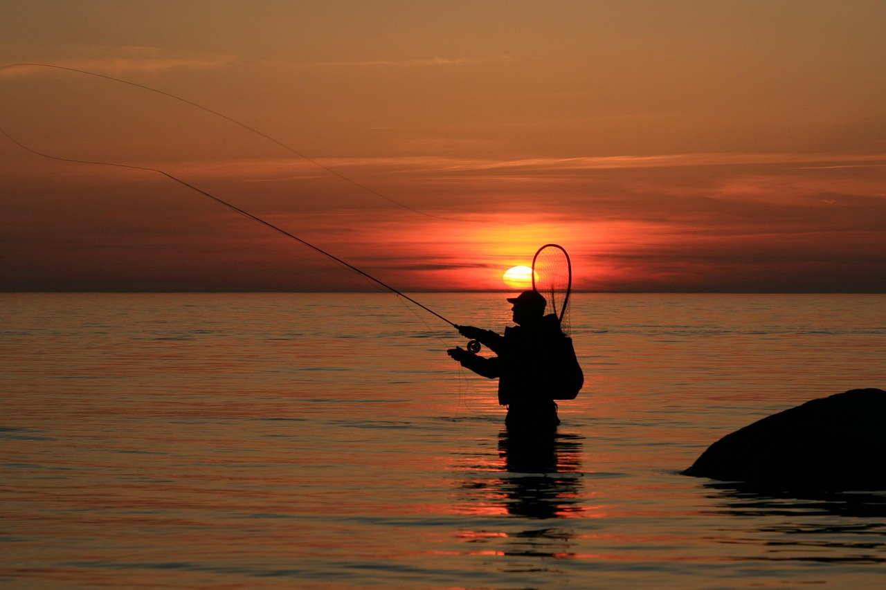

Морская рыбалка
Морская рыбалка предполагает дальний заброс — иногда на 100-150 метров. С берега хватит безынерционной катушки на ультралегком спиннинге — крупную рыбу на такой глубине все равно не поймать. А вот при работе с лодки дистанция заброса менее важна, чем точность и надежность — ее гарантирует уже мультипликаторная катушка.
Вам понадабятся удилища, катушки, удилища с катушкой, грузила, приманки, световые капсулы, крючки, лески.
Приманки которые лучше всего подходит для морской рыбалки: Утяжеленные приманки, такие как блесны и утяжеленные мягкие пластмассы , отлично подходят для заброса на большие расстояния с берега. Спиннеры и поверхностные попперы также хорошо работают, создавая видимые и слышимые возмущения в воде, привлекая рыбу даже при сильном прибое.
Удачной вам рыбалки
| Параметр | Описанние |
|---|---|
| Экипировка | Удилища, катушки, сети, багры, плоскогубцы, одежда и электроника |
| Основные виды рыб | Сельдь, минтай, кета, треска, скумбрия, окунь морской, горбуша, форель и другие |
| Приманки | Джиги и глубоководные воблеры, креветки самая лучшая наживка |
| Техники ловли | Используйте удилище с большой катушкой для спиннинга в соленой воде и леской с тестом 20–25 фунтов |
| Сезон | В мае начинается и заканчивается в ноябре включительно |
| Особенности | Кардинально отличается от рыболовной «охоты» на всевозможных пресноводных водоемах. |